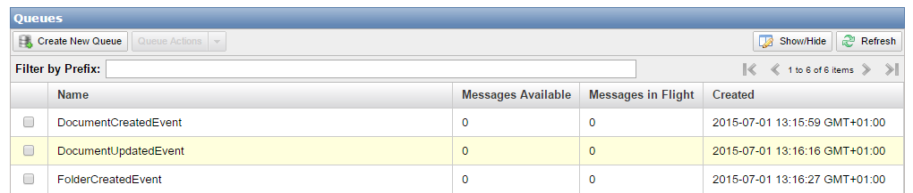
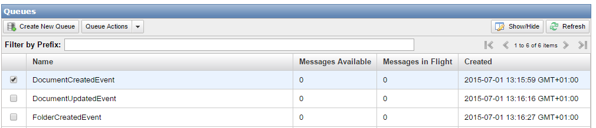

Libraries and supporting examples for use with the Ports and Adapters and CQRS architectural styles for .NET, with support for Task Queues
This project has been created to be an example how to use Brighter under AWS SQS Infrastructure. This project is a service which listens 3 different events from AWS SQS.
And the event handlers are:
IN AWS console, you need to create 3 different SNS topics for the events

And create 3 different queues listening those SNS topics

Once you have the topics and the queues, just update the app.config file's <serviceActivatorConnections/> section and put your queue urls.
You also need to set your AWSSDK profile in app.config file's <aws/> section. To findout how to setup your credentials please check Running Under AWS SQS Infrastructure section.
To set up your application to use Brighter on SQS, you can use the following code.
var sqsMessageConsumerFactory = new SqsMessageConsumerFactory(logger);
var sqsMessageProducerFactory = new SqsMessageProducerFactory(logger);
var builder = DispatchBuilder
.With()
.CommandProcessor(CommandProcessorBuilder.With()
.Handlers(new HandlerConfiguration(subscriberRegistry, handlerFactory))
.Policies(policyRegistry)
.NoTaskQueues()
.RequestContextFactory(new InMemoryRequestContextFactory())
.Build()
)
.MessageMappers(messageMapperRegistry)
.ChannelFactory(new InputChannelFactory(sqsMessageConsumerFactory, sqsMessageProducerFactory))
.ConnectionsFromConfiguration();
_dispatcher = builder.Build();
For details, please check out the example project here
To generate DocumentCreated, DocumentUpdated and FolderCreated events, you can use DocumentsAndFolders.Sqs.EventsGenerator
This project is a console application which can create bulk events and post it to the SNS topics. The parameters are:
Example:
./.DocumentsAndFolders.Sqs.EventsGenerator.exe -eventType "DocumentCreatedEvent" -eventCount 1000 -firstEventId 1 -documentPerFolder: 10 -firstFolderId: 1
This should genereate 1000 DocumentCreatedEvents with DocumentIds 1-1000 and FolderIds 1-100 in DocumentCreated Queue.